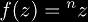
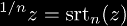
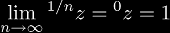
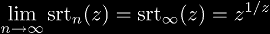
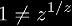
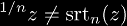

Tetrate functions (also called super-power functions) are defined by tetration with
constant height. In other words the function
 is the n-th tetrate function.
For integer n, tetrate functions can be evaluated using exponentiation alone,
which makes them extremely nice to work with. Since we can use exponentiation,
tetrate functions may be graphed on pocket calculators, in popular programming languages,
or the like. For example, on a TI calculator, one can enter Y = X^(X^X) in
the graph section to see a graph of the third tetrate.
To extend n to real or complex numbers, tetrate functions are not the place to look. This is because the axiom of tetration does not apply to a single tetrate function, but relates two different tetrate functions. Thus, it does not provide a way to gain any insight into a tetrate function, aside from its relation to other functions. Also, the way exponentiation is commonly extended from integers to real numbers is by way of the rational numbers. With this technique, zp/q = y is defined such that zp = yq, and the powers with real number exponents is defined by the limit of rational powers. This does not work for tetration, because of the following.
Theorem (Reciprocal Heights) The tetrate function of height (1/n) is not the nth super-root.
This was first proved by Rubstov and Romerio in ? with the following proof by contradiction. Assume . It follows that  and that , but , therefore .
|
Copyright © 2010 Andrew Robbins ( |
|